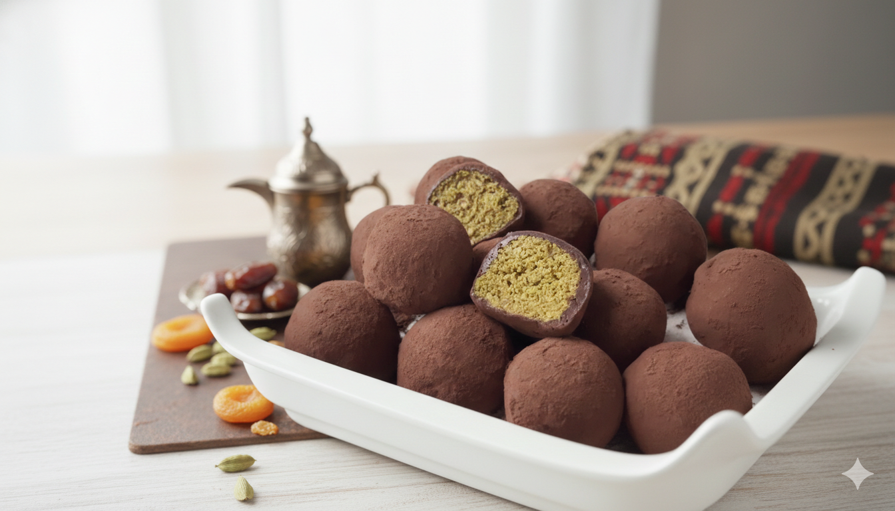

시각적 쾌감을 극대화한 '단면의 미학'이 숏폼 콘텐츠에 최적화되어, 보는 것만으로도 식감을 상상하게 만드는 '비주얼 ASMR' 효과를 창출합니다.
"나도"라는 뜻의 디토 소비 성향이 강해지며, 유명 인플루언서의 소비를 추종하고 인증함으로써 트렌드 집단에 소속되려는 욕구를 충족합니다.
소비자가 단순 구매자를 넘어 '두쫀쿠 지도'를 제작하고 실시간 재고 정보를 공유하는 등, 유행의 확산과 정보 재생산을 주도하는 주체로 진화했습니다.